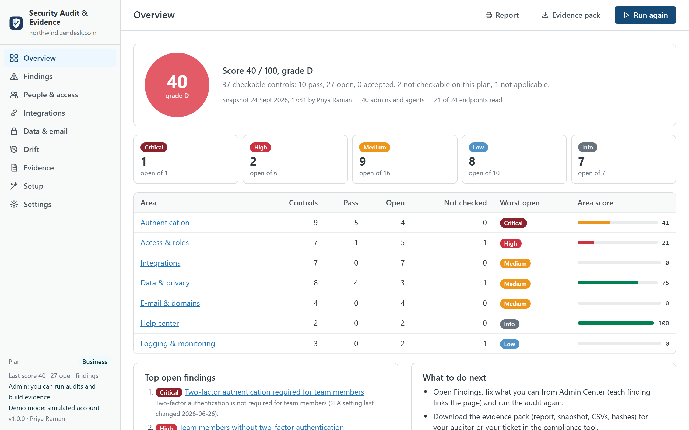
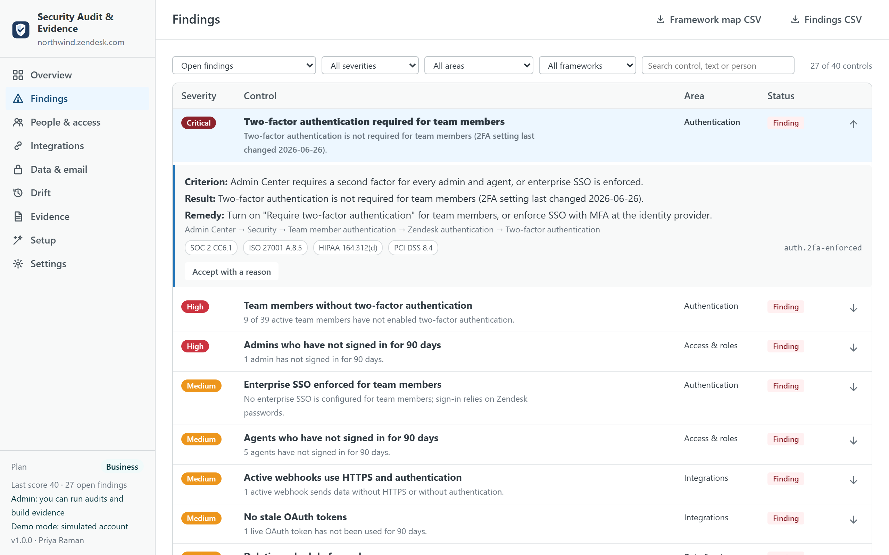
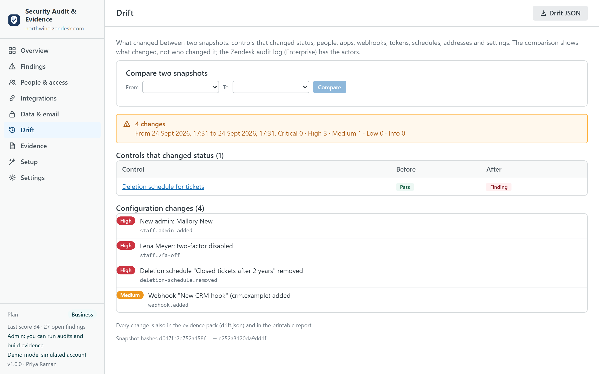

Security Audit & Evidence
Check your Zendesk account's security configuration against 40 controls, inventory who has access and what sends data out, see what changed since the last run, and hand your auditor an evidence pack with a printable report, the snapshot and SHA-256 hashes. It runs inside Support with the admin's own session, reads only, and nothing leaves the account.
Built for SOC 2, ISO 27001, HIPAA, PCI DSS and GDPR reviews, and for admins on plans without the Zendesk audit log. An independent app from a third-party developer, not affiliated with or endorsed by Zendesk. The 40 controls, and how to check each one by hand.

What it does
- Runs 40 controls in one click. Authentication (two-factor required and who has not enrolled, password level, session timeouts, IP restrictions, SSO, Google or Microsoft sign-in, admins setting passwords), access and roles (admin count, people inactive for 90 days, suspended people with a role, custom roles with sensitive permissions, empty groups, light agents), integrations (third-party apps, webhooks without HTTPS or authentication, legacy targets, OAuth clients and stale tokens, API tokens before their 2027 retirement, rules that notify external endpoints), data and privacy (deletion schedules, attachment authentication and link expiry, agent ticket deletion, sandbox, attachments in e-mails, password access to the API), e-mail (SPF, DKIM, domain verification, forwarding), help center (publishing permissions, public help centers) and logging (audit log, long-lived sessions, baseline snapshot).
- Explains every result. Each control states its criterion, what was read, the people or objects involved, the remedy and the Admin Center page where the setting lives. A control whose endpoint your plan does not expose (custom roles and the audit log outside Enterprise, sandboxes without the add-on) is "not checkable", with the status code, never guessed.
- Scores and lets you accept. A score from 0 to 100 weighted by severity (critical 10, high 6, medium 3, low 1, informational 0). A finding can be accepted with a reason and an optional review date; the acceptance is stored in the app's installation with the admin's name and stays visible as evidence.
- Inventories. Admins and agents with role, two-factor status, last sign-in and groups; custom roles and their sensitive permissions; installed apps with author and restrictions; webhooks and targets; OAuth clients and tokens; API tokens; deletion schedules; support addresses with SPF, DKIM, domain verification and forwarding; brands and help centers. On screen and as CSV.
- Drift. Every run keeps a snapshot without secrets. The next run shows what changed: controls that changed status, admins added or removed, two-factor switched off, apps or webhooks added, tokens created, schedules deleted, addresses that lost verification, settings that moved. The comparison says what changed, not who; the Zendesk audit log (Enterprise) has the actors.
- Evidence pack. A ZIP with the printable report (cover, score, findings by area with criterion and remedy, inventories, drift, framework coverage, methodology and the endpoints read),
snapshot.json,findings.jsonandfindings.csv,agents.csv,integrations.csv, the framework map andmanifest.jsonwith the SHA-256 of every file, so an auditor can verify nothing was altered after generation.

What it does not do
- It does not certify anything. The app checks configuration and produces evidence; a SOC 2 report or an ISO certificate comes from your auditor, and the framework references on each control are a reading aid for them.
- It does not replace the Zendesk audit log. Drift compares two snapshots; it cannot tell who changed a setting. On Enterprise, the audit log summary is part of the snapshot and the log itself remains the source for actors.
- It never changes a setting. The audit is read-only. The only writes are, on Business and if you switch it on, evidence records into a custom object of your own account, and the shared settings (accepted findings) in the app's installation.
- It does not read ticket content. Personal data in tickets is the job of Data Custodian.

Plans
| Free | Pro · $149 | Business · $249 | |
|---|---|---|---|
| Controls evaluated | 12 (authentication and access) | All 40 | All 40 |
| Score and findings on screen | ✓ | ✓ | ✓ |
| Inventories | On screen | On screen and CSV | On screen and CSV |
| Evidence pack (report, snapshot, CSVs, hashes) | — | ✓ | ✓ |
| Drift between snapshots | — | Last two | Any two |
| Accept findings with a reason | — | ✓ | ✓ |
| SOC 2, ISO 27001, HIPAA, PCI DSS, GDPR mapping | — | ✓ | ✓ |
| Evidence stored inside your account (custom object) | — | — | ✓ |
| Quarterly access review pack with sign-off | — | — | ✓ |
| Snapshots kept | 3 | 24 | 60 |
| Priority support (one business day) | — | — | ✓ |
| Free trial | 14 days | 14 days |
Prices are per month per Zendesk account, not per agent, billed through the Zendesk Marketplace and cancellable from Admin Center at any time. A consultancy auditing several client accounts pays per account.
Compared with the alternatives
| Security Audit & Evidence | Zendesk Security overview page | Compliance platforms (Vanta, Drata, Secureframe) | Your own scripts | |
|---|---|---|---|---|
| Pricing | Per account, from $0 | Included | Per company, thousands per year, Zendesk as one of many integrations | Engineering time |
| What it checks in Zendesk | 40 controls across settings, people, roles, apps, webhooks, tokens, schedules, e-mail, help center, logging | A short list of recommendations on authentication and passwords | Mostly users and their MFA status through the API; configuration is out of scope | Whatever you write |
| Export and history | Evidence pack with hashes; every run kept; drift between runs | No export, no history | Evidence collected into the platform | Write it |
| Where your data goes | Stays in your Zendesk account and the admin's browser | Stays in Zendesk | The platform's servers | Wherever you run them |
| Plans without the audit log | Drift shows what changed between runs | — | — | Write it |
Competitor details are from public documentation in September 2026 and may change; check their pages before deciding.
Privacy
The app has no server. It reads security and account settings, admins and agents, roles, groups, apps, webhooks, targets, OAuth and API token metadata, business rules, deletion schedules, support addresses, brands, Guide permissions, the audit log summary and sessions through the Zendesk API with the signed-in admin's session, only when you run the audit. Tokens, client secrets, signing secrets, passwords and other apps' installation settings are dropped before a snapshot is kept, so the snapshot and the pack contain no secret. Snapshots, events and accepted findings live in the browser's local storage (and, on Business if you switch it on, in a custom object of your account) and can be cleared from Settings. Nothing is sent to the developer or to any third party; there are no analytics, cookies or AI services. The same privacy policy and terms as Help Center Doctor apply.
Install
- Open the listing on the Zendesk Marketplace (link added once the listing is approved), click Install and choose a plan. You need to be a Zendesk admin.
- Restrict the app to admins (audits need an admin session), then click Install.
- In Zendesk Support, open Security Audit & Evidence from the left navigation bar and click Run audit.
Frequently asked questions
Why does it need an admin? Zendesk answers the security settings, OAuth and API token lists, deletion schedules and the audit log to admins only. An agent who opens the app sees a screen that explains this and can change the language; nothing else.
What happens on Team, Growth or Professional plans? Custom roles and the audit log answer 403 there, and a sandbox is an Enterprise feature; those controls are reported as "not checkable on this plan" with the reason and stay out of the score. The other 36 or 37 controls run. Drift between your own snapshots is the substitute for the audit log.
Is the snapshot safe to send to an auditor? It carries configuration and metadata: names, e-mails of team members, endpoints of webhooks, ids of tokens. It never carries token values, secrets, passwords, IP addresses of the audit log or other apps' settings; a unit test feeds the app a raw answer with every secret field and checks that none survives. Review the people list before sending it outside the company, as you would with any access review.
How do I verify a pack? manifest.json lists the SHA-256 of every file; sha256sum report.html (or certutil -hashfile report.html SHA256 on Windows) must match. The snapshot's own hash is printed in the report.
Can I accept a finding I disagree with? Yes, on Pro and Business: with a reason and an optional review date. It counts as handled in the score, stays listed as accepted, and appears in the report with the name of the admin who accepted it.
Does it run on a schedule? No: the app runs when an admin opens it and clicks Run audit, which takes under a minute. Run it monthly and before each review; Business keeps 60 snapshots.
Also from the same developer: Data Custodian searches, exports, redacts and deletes tickets with evidence; Ticket Print & PDF prints and exports tickets; Proactive Outreach creates one proactive ticket per customer; Help Center Doctor finds and fixes help center problems.
Support: support@helpcenterdoctor.app, answered within one business day.